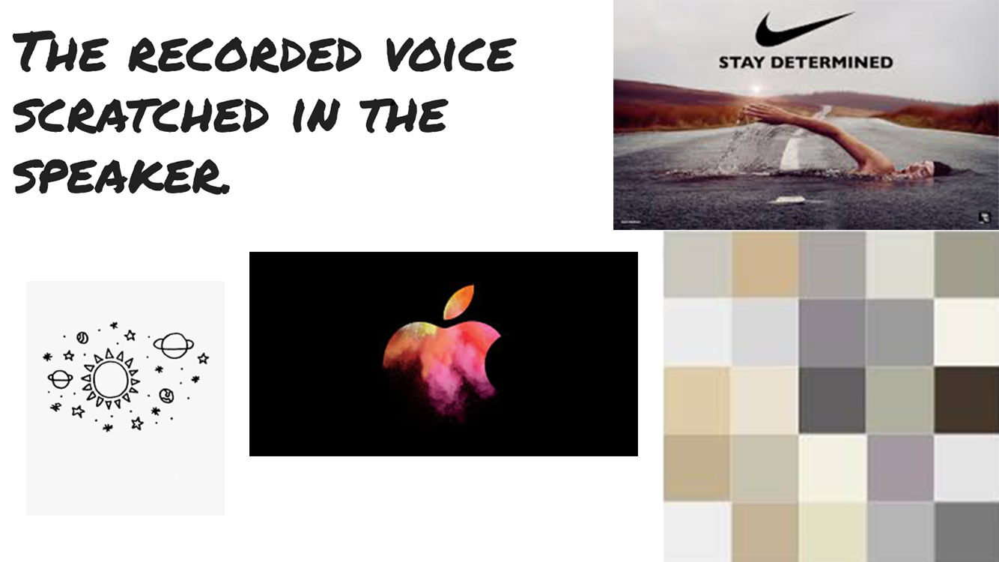

Small town kid with big time dreams, always making moves never plans.

A page containing my resume including a link to donwload and view it. Provides the viewer with a backround of my work and educational expierence. It is also good for potential employers or others who may be intrested in my expierence
This page will include things about me that are not in my resume. Where I grew up, the expierences I had that shaped who I am today. It will give the user an insight into me as a person and what events molded me. I will provide some personal stories from my time at jmu as well as growing up. It could also include stories and insight into my family.
This section will include content about what I like to do in my free time and hobbies I enjoy. I will talk about a wide variety of my intrests from what I listen to, to favorite activitys of mine. I think this will give users a good understanding of what I am passionate about.
This is where I will talk about my plans for the future. My plans post graduation, what I hope to achieve in my professional life. I will go into detail about my aspirations not only in the professional realm but overall as a person as well.
I like the simple athestic of this website. Although it is very complex and contains a lot, its simple design makes it so that it is not overwhelming to the user. The content also has a very good hierarchy, with the most important things being what you see first. The purpose of the site also passes the 5 second rule, instantly reconizable that it is a personal website with a blog and articles voicing the authors personal opinions and thoughts.